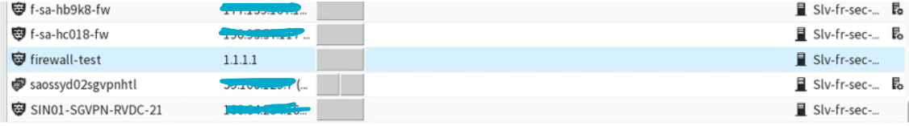

Presentation de l'entreprise
Bsecure est un cabinet d’expertise en cybersécurité des applications et des infrastructures créées en 2009. Son activité est essentiellement basée sur de l’audit et la recherche de vulnérabilités informatiques. Elle intervient pour différents types d’audits :test d’intrusion, audit de code, audit des infrastructures, audit de cloud…. La remédiation est un point fort de l’expertise afin de s’adapter au système propre à chaque entreprise pour détecter les risques. Bsecure va corriger les vulnérabilités et éviter l’exploitation possible d’autres failles. Bsecure est une entreprise qui travaille essentiellement à distance mais qui possède un bureau dans le 13ème arrondissement. Pour ma part je suis intervenu sur la partie développement de l’entreprise puisque c’était le but du stage.
- Nom : Bsecure
- Adresse: 61 avenue secretan 75019
- Forme juridique:SARL
- Effectif: 20 salariés
- Taille: PME
- RGPD : En terme de RGPD BSECURE se doit d'etre très vigilant envers ses clients et les données qu'elle traite. Le responsable se soucie du respect de la RGPD.
- secteur d'activité: conseil en systèmes et logiciels informatiques
- service d'intervention: MSSP Accor(Managed Security Service Provider)
Presentation du projet
L’entreprise gère la sécurité des réseaux de la chaine d’hôtel Accor et en particulier la mise en place et la maintenance de Firewall pour contrôler l’entrée et sortie du réseau. Suite aux problèmes de fraudes de carte bleu au sein de leurs hôtels, Accor s’est vu obligé de sécuriser ses réseaux par des pares-feux. Ma mission était donc de créer un firewall avec les différentes options nécessaires. La création du Firewall se fait grâce à une fonction Lambda (sur AWS), celle-ci échange avec la SMC (API) qui permet de gérer les Firewall. Pour cela je devais me connecter à un serveur de rebond qui me permettait de consulter la SMC grâce à l’outil ForcePoint.
- Première mission:
- Deuxième mission
- Troisième mission
Il fallait créer un nouveau firewall (composé uniquement d'un node : singleNode) Pour cela il fallait s’aider de la documentation de l’API SMC pour trouver les différentes méthodes disponibles pour les objets utilisés. Pour créer un Layer3 (type de firewall) composé d’un seul Node il fallait effectuer le code suivant :
Je verifie que mon firewall s'est bien créé en regardant sur l'interface de la SMC:
Pour créer un firewall-cluster composé de plusieurs nodes il fallait utiliser l’objet FirewallCluster avec la méthode create qui est composé de plusieurs options : Ce firewall est composé de 3 nodes et d’une interface Je vérifie sur l’interface de forcePoint qui affiche tous les firewalls présents au sein de la SMC :
Ajouter des Vlans(réseau virtuel) à une interface déjà existante sur un firewall Les vlans sont des éléments que contient une interface (c’est comme des sous-interfaces). Il fallait donc configurer et ajouter des vlans à une interface d’un firewall toujours à l’aide de la fonction lambda.Il fallait donc rechercher la methode à utiliser dans la doc :
Conclusion sur le stage
Ce stage m'a permis de decouvrir beaucoup de nouveaux outils et de nouvelles technologies comme AWS,Rapid7. J'ai pu apprendre à travailler avec une API et à recupérer des données de celle-ci.De plus j'ai pu decouvrir le language JS orienté coté serveur (nodeJS). Au sein d'AWS j'ai pu découvrir differents services notamment les fonctions Lambda sur lequel je travaillais. Enfin,j'ai egalement pu travailler en groupe (avec un collaborateur).